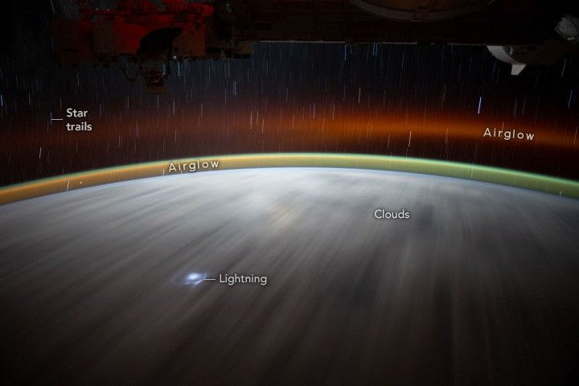

Nighttime Over the Eastern Pacific
An astronaut aboard the International Space Station captured this nighttime photograph of clouds over the eastern Pacific Ocean. At the time, the space station was orbiting over a point near the equator about halfway between Mexico’s coastline and French Polynesia. The oblique, wide-field-of-view photo shows an extensive cloud deck stretching from horizon to horizon. The small bright spot toward the lower left is lightning associated with a thunderstorm.
Looking toward Earth’s limb, layers of airglow arc across the width of the image and display two major visual components. The prominent green line is generated by the photochemical excitation of oxygen (O2) at around 130 kilometers (80 miles) in altitude. The diffuse, red-toned layer is generated by the excitation of atomic oxygen (O), located about 240 kilometers (150 miles) above the Earth’s surface. The station flies well above the airglow layer at altitudes of between 370 and 460 kilometers (230 and 285 miles).
The numerous short lines in the night sky, or “star trails,” result from the apparent motion of stars as captured by the handheld digital camera used by the astronaut, both of which are moving at about 27,500 kilometers (17,100 miles) per hour. This apparent motion results from the curved orbital path of the station and the five-second exposure used in taking this nighttime image.